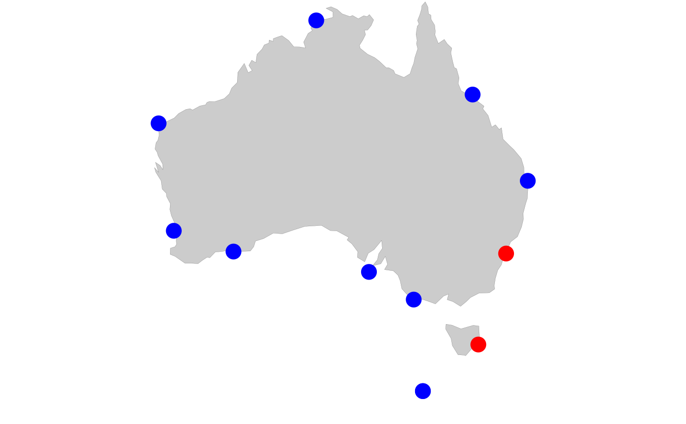
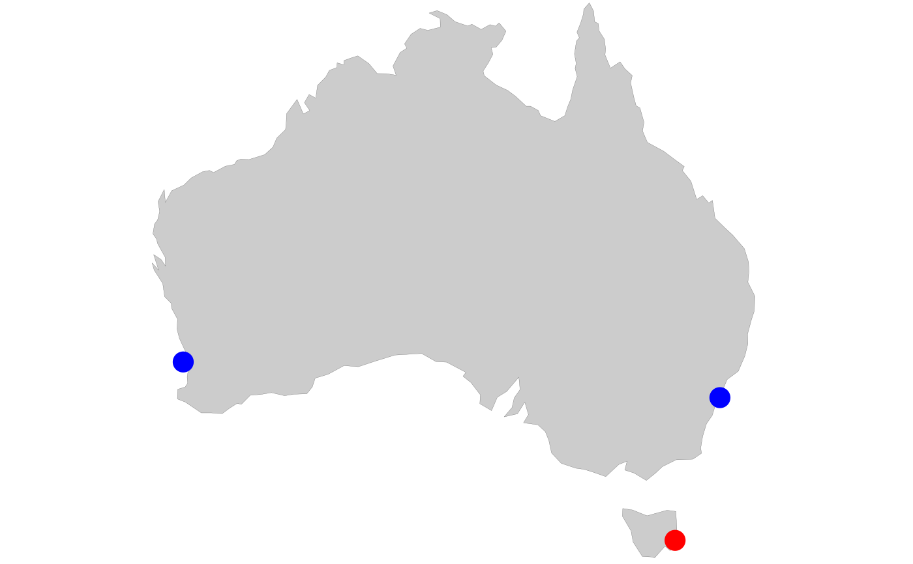

Plot Australian coastline with NRS sampling stations, highlighting selected stations in red and non-selected stations in blue. Useful for showing which stations are included in an analysis or visualisation.
pr_plot_NRSmap(sites, Survey = "NRS", Type = "Zooplankton")Character vector of station codes to highlight. Valid codes:
"DAR" - Darwin
"YON" - Yongala
"NSI" - North Stradbroke Island
"PHB" - Port Hacking
"MAI" - Maria Island
"KAI" - Kangaroo Island
"ESP" - Esperance
"ROT" - Rottnest Island
"NIN" - Ningaloo
Which station network to display:
"NRS" - All National Reference Stations (default)
"LTM" - Long Term Monitoring subset (Maria Island, Port Hacking, Rottnest Island)
"Coastal" - Coastal stations
Plankton type, affecting which stations appear:
"Zooplankton" - Standard NRS stations (default)
"Phytoplankton" - Includes Southern Ocean Time Series (SOTS) station
A ggplot2 object with transparent background, suitable for overlaying
or saving with ggsave()
The map shows the Australian coastline from:
Longitude: 112.8°E to 154.5°E
Latitude: -44°S to -10.5°S (or -50°S if including SOTS)
Red points: Selected stations (specified in sites argument)
Blue points: Non-selected stations
Grey land mass
Transparent background for easy integration into documents
pr_get_Stations() for station metadata
pr_plot_CPRmap() for CPR bioregion maps
# Map showing Maria Island and Port Hacking
sites <- c("MAI", "PHB")
pmap <- pr_plot_NRSmap(sites, Type = "Phytoplankton")
#> Warning: no non-missing arguments to min; returning Inf
#> Warning: no non-missing arguments to min; returning Inf
#> Warning: no non-missing arguments to max; returning -Inf
#> Warning: no non-missing arguments to max; returning -Inf
print(pmap)

# Long Term Monitoring stations with one highlighted
pr_plot_NRSmap(sites = "MAI", Survey = "LTM")
